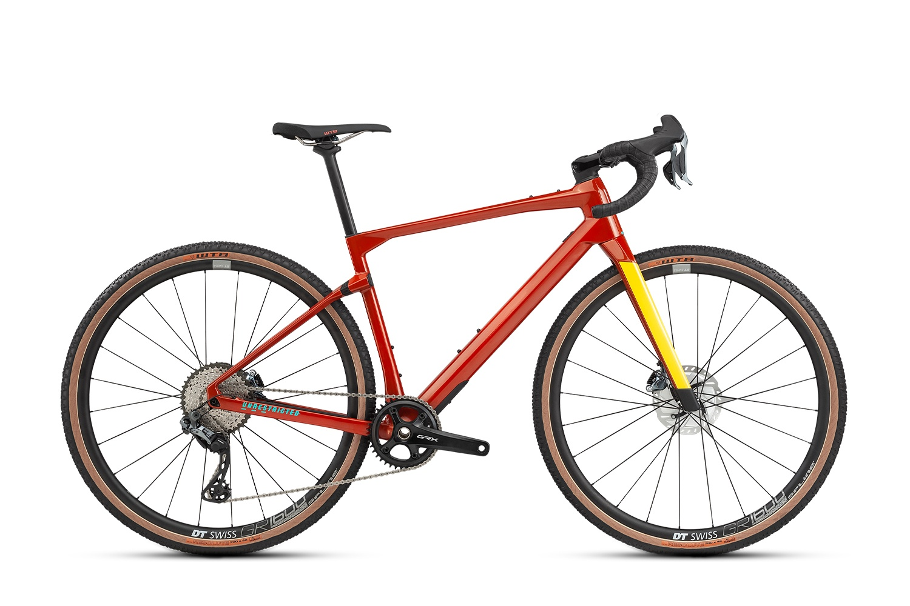

Велосипед гравийный BMC URS Two (2020) / Красный
Описание товара

Карбоновая рама
Карбоновая вилка
Групсет Shimano Di2 (electronic)
Колеса АDT Swiss GR 1600 SPLINE db 25
Геометрия Gravel+
Характеристики товара
- Цепь - Shimano HG701
- Кассета - Shimano Deore XT
- Манетка - Shimano GRX RX815 Di2
- Задний переключатель - Shimano GRX RX817 Di2 | 11-speed
- Цепное соотношение - 40
- Система - Shimano GRX RX810
- Тормоза - Shimano GRX RX810 | RT-MT800 Rotor | 180/160mm
- Колеса - DT Swiss GR 1600 SPLINE db 25
- Подседельный штырь - URS D-Shape Carbon | 15mm offset
- Седло - WTB SL8 Team 142
- Руль - Easton EA70 AX
- Вынос руля - BMC ICS 01 | Integrated Cockpit Design | with computer & camera mount
- Вилка - URS 01 Premium Carbon | Flat Mount | Integrated Cockpit | 12x100mm
- Рама - URS | Premium Carbon | TCC Gravel | Micro Travel Technology | PF86 | Flat Mount | 12x142mm
- Групсет - Shimano Di2 (electronic)
- Передача - 11-42
- Тип тормозов - Disc Brake
- Покрышки - WTB Resolute | 42mm
- Обода - DT SWISS GR 1600 SPLINE db 25
- Втулки - DT SWISS GR 1600 SPLINE db 25, Thru Axle
- Материал - 01 Premium Carbon, TCC Gravel
- Передняя звезда - Shimano GRX RX810, 40T
Подробное описание товара
Велосипед гравийный BMC URS радует своих фанатов непревзойденным качеством.
Сверхлегкая, готовая к гонкам рама и мощная установка сочетаются со знаменитой точностью BMC, современной интеграцией и тщательно разработанной геометрией Gravel+.
Велоипед содан из сверхпрочного материала 01 Premium Carbon, TCC Gravel.
Отличительные особенности
Карбоновая рама премиум-класса
Шток вилки ICS
D-образный карбоновый подседельный штырь
Электронная 11-скоростная трансмиссия Shimano GRX Di2
Колесная пара DT Swiss GR 1600 Spline
Фото, описание и характеристики товара взяты с сайта citycycle.ru